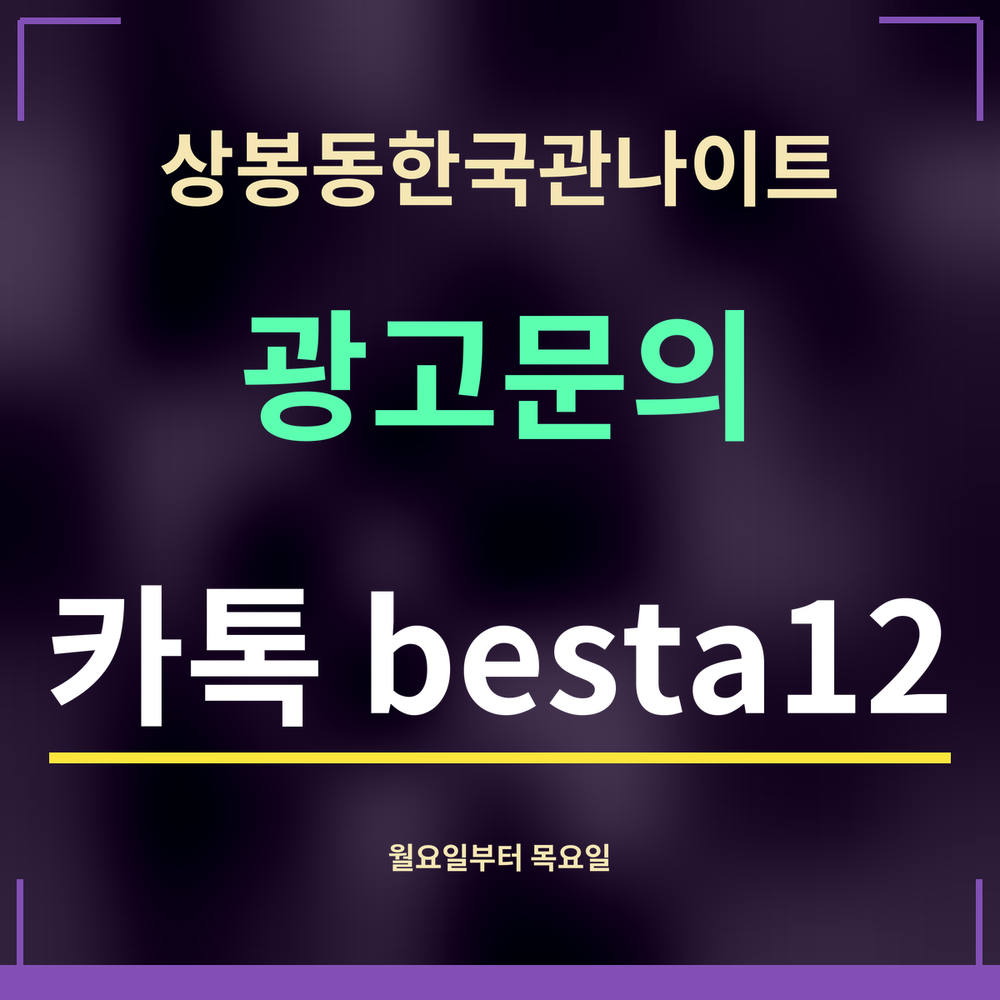

19세 미만 출입 금지
상봉동한국관나이트 평일 가려면 무슨 요일, 월~목 비교
제휴 없는 정보 안내 · 카카오맵 시간대별 방문 지표(2026년 9월 27일 확인) 가운데 저녁 6시~밤 11시(18~23시) 값을 더했습니다. 사람 수가 아닌 상대 지표입니다.

직답: 평일 저녁 합은 월요일 20,134로 가장 낮고, 목요일 29,775로 가장 높습니다. 한산한 평일을 고른다면 월·화요일, 주말 분위기에 가까운 평일을 고른다면 목요일입니다.
월~목 저녁(18~23시)
| 요일 | 저녁 합 | 가장 높은 한 시간 |
|---|---|---|
| 월요일 | 20,134 | 4,364 |
| 화요일 | 22,815 | 5,516 |
| 수요일 | 26,958 | 6,509 |
| 목요일 | 29,775 | 8,078 |
요일마다 무엇이 다른가
월요일에서 목요일로 갈수록 저녁 합이 꾸준히 올라갑니다. 가장 높은 한 시간도 월요일 4,364에서 목요일 8,078로 두 배 가까이 됩니다.
조용히 이야기를 나누며 시작하고 싶다면 월·화요일이, 조금 들뜬 분위기를 원하지만 금·토요일의 붐빔은 피하고 싶다면 목요일이 맞는 편입니다. 지표는 평균이라 공휴일 전날처럼 예외가 있는 날은 다를 수 있습니다.
평일 밤에 챙길 것
평일에 상봉동한국관나이트를 찾는다면 다음 날 일정이 있는 경우가 많습니다. 차를 가져왔다면 술을 마신 뒤에는 운전하지 않습니다. 법제처 생활법령정보(2026년 8월 15일 기준)에 따르면 혈중알코올농도 0.03% 이상이면 운전이 금지되고, 0.08% 이상이면 면허가 취소됩니다. 대리운전이나 대중교통을 미리 정해 두세요. 월요일 18시 지표는 1,923으로 월요일 저녁 여섯 시간 가운데 가장 낮아, 이른 시각이 특히 여유롭습니다.
자주 묻는 것
평일 중 가장 한산한 날은요?
저녁 6시~밤 11시 지표를 더하면 월요일이 20,134로 가장 낮습니다.
저녁 6시~밤 11시 지표를 더하면 월요일이 20,134로 가장 낮습니다.
목요일은 어떤가요?
목요일은 29,775로 월~목 가운데 가장 높습니다.
목요일은 29,775로 월~목 가운데 가장 높습니다.
주말과는 얼마나 차이가 나나요?
금·토요일은 초저녁부터 지표가 높아, 주중과 차이가 큽니다. 요일 전체 흐름은 초저녁 비교 쪽을 보세요.
금·토요일은 초저녁부터 지표가 높아, 주중과 차이가 큽니다. 요일 전체 흐름은 초저녁 비교 쪽을 보세요.
한 줄 정리: 상봉동한국관나이트 평일은 월요일이 가장 한산하고 목요일이 가장 붐빕니다.
새벽 흐름은 평일 새벽에 따로 정리했습니다.